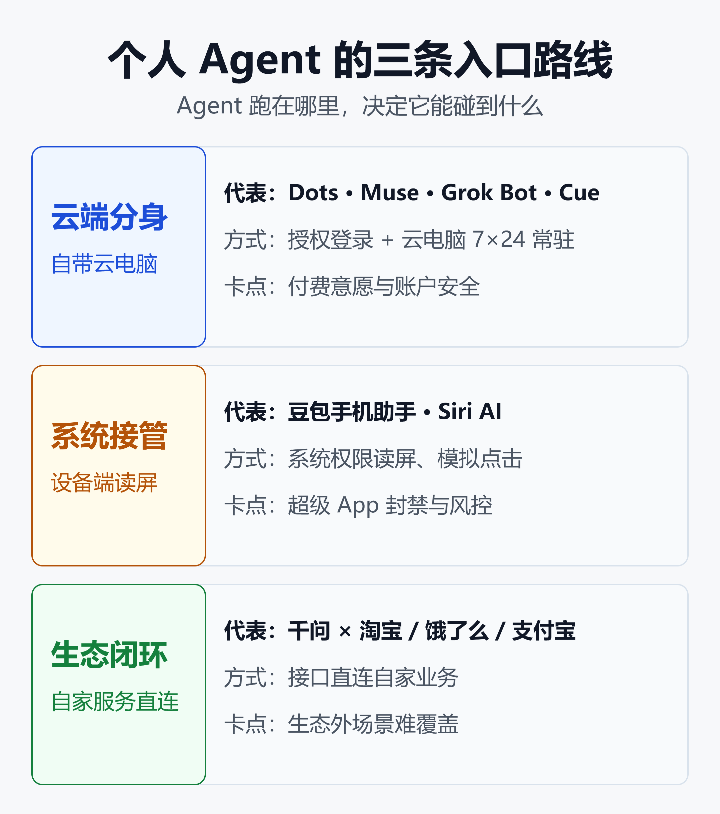

看懂个人 Agent 入口之争：云端分身、系统接管、生态闭环三条路线怎么选
50 天，六款个人 Agent
从 8 月 11 日到 9 月 29 日，不到 50 天里，全球头部玩家几乎全部亮出了自己的个人 Agent。
它们是 SpaceXAI 的 Grok Bot、Meta 的 Muse、苹果的 Siri AI、阿里的千问 Personal Agent、Manus 的 Cue，以及 OpenAI 的 Dots。
同一时间，另一组数字在中国发生：豆包 6 月月活 3.82 亿，断层领先；但搭载豆包手机助手的设备，却接连在微信、王者荣耀里被判定「环境异常」。
一边是发布会扎堆，一边是被拒之门外。这不是简单的「谁模型更强」，而是一场关于入口的争夺：用户下一次说「帮我订一下」时，是谁在听、谁在执行、谁来扣钱。
本文把这一轮混战拆成三条路线，逐一看清它们的做法、代价和卡点，最后给出不同角色的选择建议。
一个月的发布时间线
| 日期 | 事件 |
|---|---|
| 8 月 11 日 | Grok Bot 上线 |
| 9 月 8 日 | Meta Muse 上线 |
| 9 月 14 日 | Siri AI 上线 |
| 9 月 22 日 | 千问个人智能体 |
| 9 月 28 日 | Manus 2.0 + Cue |
| 9 月 29 日 | OpenAI Dots |
节奏本身就是信号。Muse 上线 10 天就把 ChatGPT 挤下美区 App Store 第一，首两周下载量约 250 万；OpenAI 三周后在 DevDay 拿出 Dots，被多家媒体直接称为「对 Muse 的回应」。
微软也没有缺席，推出了常驻在 M365 租户里的 Copilot Autopilot。不过它面向企业办公，本文的重点放在面向个人的产品上。
先定义：什么才算个人 Agent
「Agent」这个词被用得太宽，先划一条线。本文判断一个产品是不是个人 Agent，看四个条件：
- 常驻：不是你问一句它答一句，而是在后台持续推进目标
- 代表你：能用你的授权或它自己的身份，登录账户、发消息、付款
- 跨应用执行：能在多个应用和网站之间完成多步任务
- 有记忆：会随着使用积累你的偏好和上下文
按这四条，两个容易混淆的产品需要单独说明。
Grok Bot：算，但偏工作
Grok Bot 官方的说法是「一支 always-on 的 Agent 团队」。每个账号配一台常驻云电脑，Bot 能开浏览器、读写文件、跑终端命令，通过连接器和 MCP 工具登录你的应用。
它完全满足四个条件，但场景明显偏工作和开发。它不单独售卖，主要捆绑在 Cursor 的付费档里，这决定了它的第一批用户是开发者，而不是普通消费者。
Manus 2.0：本体不算，Cue 才算
Manus 2.0 本体是一次平台升级：新的 Cascade 框架、Studio 桌面端、Cloud Computer 和 Automations。它更像一个通用的「干活」工具，你给任务它交付结果。
真正的个人 Agent 是同时发布的独立 App Cue：每个 Agent 有自己的邮箱、电话号码、钱包和电脑。它能替你发消息、接电话并留下摘要，还能在你设定的预算内付款。
三条路线：Agent 跑在哪里
把这一轮产品摆在一起，最有解释力的维度不是模型参数，而是 Agent 跑在哪里、以什么身份碰你的应用。按这个维度，可以清楚地分成三条路线。

图里的三条路线分别是：云端分身给 Agent 一台自己的云电脑，通过授权登录办事，卡点是付费意愿和账户安全；系统接管在你的设备上读屏、模拟点击，卡点是超级 App 的封禁和风控；生态闭环用接口直连自家业务，卡点是生态外的场景难以覆盖。
路线一：云端分身
云端分身的核心思路是：不碰你的手机屏幕，给 Agent 一台自己的电脑。它在云上开浏览器、登录网站、调用 API，你的设备只负责下指令和收结果。
这条路线目前聚集了最多的海外玩家。
OpenAI Dots：把 12 亿周活变成 Agent 用户
Dots 基于 GPT-6 Astra，每个 Dot 有自己的云电脑，可以 7×24 小时推进你的目标，并通过插件生态连接 4000 多个应用。
它的入口设计很激进：除了 ChatGPT，还能从短信、Slack、Teams 甚至电话里唤起。也就是说，OpenAI 想让 Dots 出现在你所有的沟通渠道里，而不只是一个 App。
底气来自流量：OpenAI 在 DevDay 上宣布 ChatGPT 周活达到 12 亿。需要注意，这是公司自报数据，没有经过第三方审计。
Meta Muse：免费 + 社交关系链
Muse 走的是另一种打法：免费，并且直接放进 WhatsApp、Instagram 这些你每天在用的社交应用里。它能接入邮箱、日历、购物和支付服务，处理填表、预约、卖车挂牌这类琐事。
免费加社交分发，让 Muse 的冷启动非常快。但争议同样来得快：Forbes 报道，Muse 上线时就有 Meta 员工在内部指出其存在安全缺陷。
Grok Bot：借道 Cursor 的开发者入口
Grok Bot 的背景有些复杂：xAI 已在 2 月被 SpaceX 收购，改名 SpaceXAI；SpaceX 对 Cursor 母公司 Anysphere 的收购在 6 月宣布，截至发稿仍在等待监管审批。
这解释了它为什么通过 Cursor 分发：开发者本来就在 Cursor 里，Grok Bot 直接成为他们的「AI 同事」。代价是同一账号下所有 Bot 共用一台电脑，不同 Bot 之间没有隔离的安全环境。
Manus Cue：让 Agent 拥有独立身份
Cue 把「云端分身」推到了最彻底的一步：Agent 不再借用你的身份，而是拥有自己的邮箱、电话和钱包。这样它发出的邮件、打出的电话、花出的钱，都有一个清晰的主体。
Manus 由中国团队创立，现总部在新加坡。它与 Meta 的收购交易已经取消，公司恢复独立运营，据报道正以约 40 亿美元估值融资。Cue 目前只面向海外市场。
官方称新的 Cascade 框架在测试配置下 token 消耗降低 23.2%，任务完成速度提升 28.2%，运行成本降低 32%。这些同样是公司自测数据。
这条路线的共同点
四家的共同点是：用授权代替读屏。Agent 通过 OAuth、连接器、插件、MCP 这些「正门」进入应用，而不是在屏幕上模拟人的手指。
好处是不会和应用方正面冲突；代价是能做什么，取决于有多少应用愿意开放接口。4000 个应用听起来很多，但离「你手机上所有的 App」还差得很远。
路线二：系统接管
系统接管的思路正好相反：Agent 就在你的设备上，看你看到的屏幕，点你能点的按钮。它不需要任何 App 配合，理论上能操作一切。
豆包手机：能力最强，也最先撞墙
豆包手机助手是这条路线在国内最典型的代表。借助系统级权限，它可以读取屏幕内容、模拟点击，跨 App 完成比价、下单、回消息等操作。
问题在于，被操作的 App 并不同意。第一代豆包手机在操作微信时，被弹窗提示「登录环境存在异常」，账号被迫下线，部分账号被封。
到了 9 月，搭载豆包助手的努比亚 NaviX Ultra 又出现新问题：用户登录王者荣耀或匹配对战时被提示设备环境异常、强制下线，豆包手机助手随后公开致歉。
目前，微信、淘宝、美团、拼多多都已禁止读屏和模拟点击。这意味着国内使用最频繁的几个场景，恰恰是系统接管路线进不去的地方。
「侵入式 Agent」的治理争议
弗若斯特沙利文在 3 月发布《2026 年侵入式 Agent 产业治理白皮书》，给这类产品起了一个不太友好的名字：侵入式 Agent。
白皮书的核心观点是：借助系统签名级权限突破应用边界，会带来生态和安全风险，让应用的商业价值承压，也会推高整个行业的治理成本。
这背后是一个很现实的利益问题。当 Agent 替用户比价、下单时，App 的首页推荐、广告位、会员体系都被绕开了。App 失去的不只是数据，还有流量的定价权。
苹果：系统方亲自接管，再开放出去
苹果的做法是另一种形态的系统接管。9 月推出的 Siri AI 主打个人上下文和系统级 App 操作，能跨消息、邮件、照片检索信息并在 App 里执行动作。
苹果的优势在于：它本身就是系统方，App 通过官方接口配合，而不是被「读屏」。据报道，Siri AI 的部分能力借助了 Google Gemini 模型。
更值得注意的是 iOS 27 的 Extensions：用户可以把 Siri 换成 Claude、ChatGPT、Gemini 等第三方助手。系统入口本身开始对外开放，苹果从「自己当入口」转向「做入口的收费站」。
开源自建：OpenClaw 的教训
还有一种更极客的方式：自己搭。OpenClaw 是开源的个人 AI 助手，跑在你自己的机器上，通过微信、QQ、Telegram 等聊天应用与你对话，GitHub 星标超过 17.5 万。
它在 1 月底单日涨了 2.5 万星，但很快暴露出代价：超过 13.5 万个实例被发现直接暴露在公网上，缺乏足够的防护。自建意味着安全责任也全部在自己身上。
国内云厂商也在降低门槛，例如腾讯云提供了在轻量应用服务器上一键部署 OpenClaw、并接入微信和 QQ 的教程。
路线三：生态闭环
生态闭环的思路是：不需要去抢别人的 App，在自家生态里把事办完。这条路线目前最典型的是阿里的千问。
千问：用自家生态绕开围墙
春节期间，千问推出「30 亿免单送奶茶」活动，用户一句话点单，3 小时内订单突破百万。这是国内第一次有消费级 Agent 在真实交易规模上跑通。
9 月 22 日的云栖大会上，千问宣布加速打造 Personal Agent。办事服务除了购物外卖、出行预订、电影票，还扩展到家政、租房买房、寄快递、投资理财等 20 多个领域。
千问能做到这一点，是因为淘宝、饿了么、支付宝、飞猪都在阿里体系内。它调用的是内部接口，不需要读屏，也不存在被封禁的问题。
据报道，阿里云无影团队还有约 150 人在做一款名为 QwenBook 的 AI 平板，说明阿里也在考虑硬件入口。
闭环的边界
生态闭环最大的问题是边界。千问可以很顺畅地点饿了么外卖，但如果你想在美团下单、在微信里回消息，它就无能为力了。
中国互联网的格局决定了，没有任何一家能凭自己的生态覆盖用户全部的日常。闭环越顺，边界越明显。
流量格局：豆包领先，但入口未定
从月活看，豆包遥遥领先。根据网上流传的 QuestMobile 口径数据，3 月豆包月活约 3.45 亿，千问约 1.66 亿，DeepSeek 约 1.27 亿，元宝约 0.57 亿；6 月豆包升至 3.82 亿。
但月活高不等于入口稳。豆包有最多的用户，却在系统接管路线上撞墙；千问用户少一半，却在自家生态里率先跑通了交易。聊天入口和办事入口，可能不是同一个入口。
腾讯的位置最特殊：它手握微信这个最大的超级 App，目前选择的是「守门」——禁止外部 Agent 读屏操作。在这场入口之争里，守门本身也是一种策略。
定价：从免费到 500 美元
三条路线的商业模式差异，最直观地体现在价格上。
| 产品 | 价格 | 模式 |
|---|---|---|
| Meta Muse | 免费 | 社交 + 广告 |
| Grok Bot | 约 20 美元起 | 捆绑 Cursor |
| OpenAI Dots | 付费档可用 | 订阅分层 |
| 千问 | 免费 | 交易 + 补贴 |
几个细节值得一提：
- Grok Bot 15 天内降价三次：8 月 11 日首发只在 200 至 300 美元的顶级档提供，8 月 21 日开放免费试用，8 月 26 日进入 Cursor 20 美元的 Pro 档。不同来源的最新价格仍有出入
- Dots 首发只给付费用户：面向 ChatGPT Pro、Business Premium 和 Enterprise，同时 OpenAI 推出了每月 500 美元的新 Pro 档
- Cue 的定价：截至发稿，我们没有查到公开的详细价格
免费和 500 美元同时存在，说明市场还没找到个人 Agent 的合理价格。Meta 和阿里用免费换入口，因为它们的收入来自广告和交易；OpenAI 和 SpaceXAI 需要直接从 Agent 身上赚钱。
三道墙：权限、安全、信任
不论哪条路线，个人 Agent 都要翻过三道墙。
第一道墙：权限
云端分身靠授权，受制于应用愿不愿意开放接口；系统接管靠读屏，受制于应用会不会封禁；生态闭环靠自家接口，受制于自己的生态有多大。
没有一条路线能绕开权限问题，只是把问题放在了不同的位置。
第二道墙：安全
一个能登录你所有账户、替你付款的 Agent，一旦出问题，损失远大于一个聊天机器人说错话。
这一轮已经出现不少警示：Muse 上线就被内部员工质疑安全缺陷；OpenClaw 十几万实例暴露在公网；Grok Bot 多个 Bot 共用一台电脑，没有相互隔离。
企业侧的风险同样突出。有安全机构提醒，员工自己安装、授权访问个人账户和凭证的个人 Agent，常常绕过采购和安全审查，直接进入工作设备。
第三道墙：信任
用户愿意让 Agent 帮忙查资料，和愿意让它替自己花钱，是两种完全不同的信任。
Cue 的「预算内付款」、各家的「购买前确认」，都是在试探这道墙的高度。
关于 Agent 如何安全地完成支付，可以参考 智能体支付的中美两条路：30 家商家 vs 3 亿笔交易。
怎么选：不同角色的建议
普通用户
- 在国内，日常办事可以先用千问这类生态闭环产品，场景有限但流程最顺
- 对系统接管类产品保持谨慎，尤其不要在主力微信号、游戏账号上测试读屏功能
- 海外产品中，Muse 目前只在美国和加拿大上线，Dots 首发需要付费订阅，Cue 只面向海外
开发者和创作者
- 想要一个「AI 同事」，Grok Bot 借 Cursor 分发，和开发工作流结合最紧
- 想自己搭，OpenClaw 可玩性最高，但务必做好公网访问控制
- 做产品的团队，优先接入 MCP、插件等「正门」协议，这是云端分身路线的共同入口
企业 IT 和安全团队
- 把个人 Agent 当作一类新的「影子 IT」来管理，梳理员工授权过哪些工作账户
- 对能代表员工付款、发邮件的 Agent，要求有审计日志和额度上限
- 关注 Agent 共用环境的问题，不同任务之间最好有隔离
三个判断
第一，云端分身会成为海外主流。 它不和应用方正面冲突，又能借助现有的巨大流量分发。Dots、Muse 的竞争，本质是 ChatGPT 和 WhatsApp 两个流量池的比拼。
第二，国内会走向「生态闭环 + 协议互通」。 读屏路线在超级 App 的封禁下空间有限，更可能的走向是各家在自家生态里做深，再通过标准协议有限度地互通。
第三，入口的价值将从「流量」转向「授权」。 未来的超级入口，不是用户打开次数最多的那个，而是用户愿意把账户、支付和身份交给它的那个。
小结
这一轮个人 Agent 入口之争，表面上是六款产品的发布竞赛，实质是三种不同的答案：给 Agent 一台云电脑、让 Agent 接管你的设备、在自家生态里办完所有事。
云端分身绕开了冲突，但受限于接口开放程度；系统接管能力最强，却在国内撞上超级 App 的围墙；生态闭环体验最顺，但边界清晰可见。
无论哪条路线胜出，权限、安全和信任这三道墙都绕不过去。谁能先让用户放心地把「钱包」交出来，谁才真正拿到了下一个入口。
免责声明
本文基于公开报道和厂商发布信息整理，截至 2026 年 9 月 30 日。文中用户数、下载量、性能提升等数据多为公司自报或媒体转述，未经独立审计。产品价格与上线地区变化较快，请以官方最新信息为准。本文不构成任何投资建议。
参考来源
- OpenAI —— DevDay 2026 Recap
- The Next Web —— OpenAI launches dots, always-on AI agents with their own cloud computers
- TechCrunch —— OpenAI launches Dots, its bubbly agentic avatar
- The Verge —— OpenAI DevDay 2026: The biggest news and announcements
- Pasquale Pillitteri —— OpenAI unveils dots, the AI agent that calls and writes for you
- Forkast —— 1.2B Users, 4,000 Apps, and the First Real Price Tag for Autonomous AI
- Forkast —— OpenAI DevDay 2026: The Agent Platform Race Arrives at OpenAI's Doorstep
- Meta Newsroom —— The World's First Personal AI Agent Built for Everyone
- Forbes —— Meta Launches Muse Personal AI Agent As Staff Flag Security Flaws
- FoxData —— Muse from Meta Overtakes ChatGPT for App Store No. 1
- Yahoo Finance —— Meta's Muse AI threatens Apple's mobile commerce dominance
- Digit —— Meta Muse AI agent now available on Instagram
- xAI —— Introducing Grok Bot
- Vellum —— Official Grok Bot Breakdown (2026)
- O-mega —— Grok Bot Pricing 2026: Real Costs, Limits, Alternatives
- Coursiv —— Grok Bot: Pricing, Access Limits, and How to Use It
- Digital Applied —— Grok Bot Ships Through Cursor Tiers, Not xAI Plans
- Manus —— Introducing Manus 2.0
- The Next Web —— Manus 2.0 and Cue give AI agents their own email, phone and wallet
- Implicator —— Manus Launches Cue Agents With Phone Numbers and Wallets
- Let's Data Science —— Manus Introduces Manus 2.0 With Cascade Architecture
- Crypto Briefing —— Manus 2.0 launches as AI agent startup eyes $4B valuation
- AI Disruption —— Manus 2.0 Released
- Apple Newsroom —— Apple Intelligence brings powerful AI capabilities into everyday experiences
- The Future Geek —— Apple just turned Siri into an AI marketplace
- Let's Data Science —— Apple Intelligence News: Siri, On-device AI & Privacy
- 投资界 —— AI Agent 加速迈向跨应用执行：系统入口竞争升温
- 网易新闻 —— 豆包手机助手致歉
- 博客园 —— 豆包碰壁微信：个人数据归属的经济范式与法理解析
- OKX Orbit —— 150 人做 AI 平板，微信淘宝先关门
- LINUX DO —— 千问加速、Meta 入场，个人 Agent 彻底火了
- 博客园 —— 从「千问送奶茶」看 AI Agent 落地
- LINUX DO —— QuestMobile 发布 6 月 AI 月活榜：豆包 3.82 亿
- 博客园 —— 字节豆包与腾讯元宝的月活差距分析
- 李多思 —— OpenClaw 完整配置指南：架构设计、多 Agent 管理与安全防护
- Admin By Request —— OpenClaw Went from Viral AI Agent to Security Crisis in Just Three Weeks
- Developpez —— OpenClaw a exposé 135 000 machines à internet
- 腾讯云 —— 轻量应用服务器 OpenClaw 实践教程
- Threatcop —— Personal AI Agents at Work
相关阅读
- 从LLM到Agent的范式跃迁2026：OpenAI「去聊天化」背后，整个行业在押注什么
- 智能体支付的中美两条路：30 家商家 vs 3 亿笔交易
- AI Native OS 群雄逐鹿：从 Step AOS 到 HarmonyOS 7，操作系统正在被重写
- 浏览器内 GUI Agent 全景：Page Agent、browser-use、Stagehand、Skyvern 技术路线拆解
- Agent 商业化新范式：广告不再是横幅，而是一次对话
- 扎克伯格公开为"蒸馏"辩护：Meta 开源 30B Agent 模型背后的三场战争
- 随时随地指挥 AI 写代码：当 Cursor、Trae、OpenClaw 等把 Agent 塞进口袋之后
推荐搭配装备
善其事，利其器。以下硬件能最大化你的AI体验👇
🔗 通过以上链接购买可支持本站持续运营 🙏